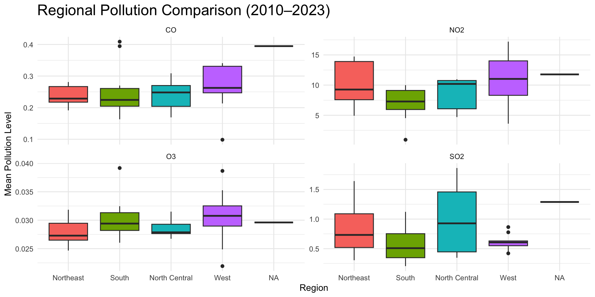
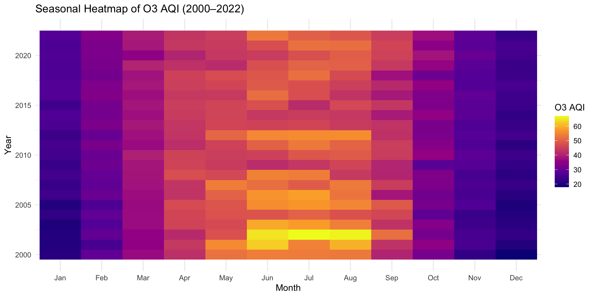

Visualizing Two Decades of U.S. Air Pollution (2000–2023)
Course: STAT 663 – Statistical Graphics and Data Visualization
Team: Siyao Huang & Minxi Li
Dataset
Data come from the U.S. EPA Air Quality System (AQS).
AQS data are collected by state and local air monitoring stations across the United States. Each monitoring station continuously measures ambient concentrations of O3, NO2, SO2, and CO. Daily pollutant measurements are reported to AQS and aggregated into state-level annual averages for this study.
Includes four major pollutants:
- O3 (Ozone)
- CO (Carbon Monoxide)
- SO2 (Sulfur Dioxide)
- NO2 (Nitrogen Dioxide)
Dataset

Research Question & Why It Matters
Main Research Question:
- How has U.S. air quality changed from 2000 to 2023 across time, regions, and pollutants?
Sub-questions:
- How do pollutant levels change over time?
- Which states are more polluted or cleaner?
- How do the four pollutants differ in behavior?
Why This Problem Matters
- Air pollution is directly linked to respiratory and cardiovascular risks.
- Long-term pollution trends help evaluate: Environmental policies (e.g., Clean Air Act), Regional inequalities and Public-health impacts.
- Understanding historical patterns supports better future planning and policy design.
Data Wrangling & Processing
- What We Cleaned & Transformed
- Removed duplicated records and enforced correct date formatting
- Standardized pollutant columns into two structures:
- AQI-based values: o3_aqi, no2_aqi, so2_aqi, co_aqi
- Mean concentration values (for alternative analysis)
- Extracted key temporal features:
year,month(seasonality),dateas Date type
- Merged datasets with state abbreviations for mapping
- Removed duplicated records and enforced correct date formatting
- Major Challenges
- Missing pollutant values in early years → handled with pairwise complete observations
- Inconsistent formats in state/city fields
- Large dataset (~665k rows) required optimized grouping and summarization
- Aligning spatial (state-level) and temporal (daily) resolutions
- Missing pollutant values in early years → handled with pairwise complete observations
- Outcome
- Created a clean and fully structured dataset ready for:
- Temporal analysis
- Spatial analysis
- PCA
- Time series
- Created a clean and fully structured dataset ready for:
Temporal analysis

o3
State-Level Pollution Changes Over Time (2000–2023)
State-Level Pollution Patterns (2010–2023)

Regional Pollution Comparison (2010–2023)
- Northeast
- Highest NO₂ (traffic & urban areas)
- Elevated SO₂ (older industrial zones)
- North Central
- High NO₂ and SO₂
- Strong industrial influence
- West
- Highest O₃ (sunlight + elevation effects)
- Generally lower CO/NO₂/SO₂
- South
- Moderate overall
- Lower NO₂ & SO₂ than Northeast
Why PCA? What it reveals beyond single-pollutant maps
Single-pollutant maps tell where each pollutant is high/low
But pollution types often co-occur (traffic → NO₂ + CO；industry → SO₂ + NO₂)
PCA summarizes overall pollution burden and pollution composition
Helps identify:
”Which states are overall the most polluted?”
”Which states are ozone-dominated vs combustion-dominated?”
PCA

Correlation Among Pollutants

Rolling Mean Trend (7-day & 30-day)

STL Decomposition

AI-Assisted Workflow Reflection
- How I Used AI
- Described the types of visual patterns I wanted to explore
- Asked for suggestions on plot types (animation, PCA, correlation, seasonal trends, etc.)
- Used AI-generated R code as a starting point
- Improved slide layout, narrative, and storytelling with AI guidance
- Described the types of visual patterns I wanted to explore
- Benefits
- Accelerated exploratory data analysis
- Suggested visualization ideas I hadn’t considered
- Helped automate repetitive code (pivoting, summarizing, smoothing, faceting)
- Improved the clarity and appearance of plots
- Strengthened narrative structure across slides
- Accelerated exploratory data analysis
- Limitations
- Sometimes suggested variables not in the dataset
- Produced repetitive or overly long code that required rewriting
- Needed human verification for statistical interpretation (PCA meaning, correlations, etc.)
- Lacked full context awareness; required manual refinement for reproducibility
- Sometimes suggested variables not in the dataset
Final Product Demonstration
Conclusions and Next Steps
- Key Findings**
- Clear regional patterns: Northeast & industrial Midwest show higher NO₂/SO₂, while Western states show higher O₃.
- Strong pollutant relationships: NO₂–CO–SO₂ are positively correlated; O₃ behaves independently with strong seasonality.
- PCA effectively summarized pollution structure:
- PC1 = overall pollution burden
- PC2 = ozone vs combustion pollution
- Temporal animation (2000–2023) reveals long-term O₃ seasonality and declining NO₂ trends.
- Limitations**
- AQI values simplify true pollutant concentrations, losing granularity.
- Monitoring station coverage is uneven across states and years.
- PCA assumes linear structure; may miss nonlinear atmospheric interactions.
- Some visualizations rely on aggregated means, which reduce local variability.
- Next Steps (with more time or better data)**
- Build a full time-series forecasting model comparing ARIMA, ETS, and Prophet across pollutants.
- Add spatially varying time-series models (e.g., STVAR, spatiotemporal kriging).
- Incorporate meteorological variables (temperature, wind, humidity) to detect causal drivers.
- Explore deep learning approaches for long-term pollution prediction.
- Build a full time-series forecasting model comparing ARIMA, ETS, and Prophet across pollutants.